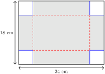
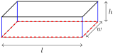
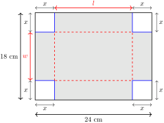

We are going to design a box with an open-top in the following way.
-
Start with a flat sheet of cardboard, of size 24 cm by 18 cm (the size varies for each question).
-
Cut out 4 square corners of equal size from the sheet.
-
Fold the 4 flaps of the sheets up, which forms the sides of the box (we tape together the sides).
-
The non-folded up part forms the base of the box.
It looks like this,


This creates a box, with an open top. If we cut out different lengths for the corner, the resulting box will have a different shape, and a different volume. Check out this Geogebra applet: Volume of a box problem. The \(c\) is how much is cut from each corner (or the cut size). Then, the volume is a function of the cut size.
(a)
Find an expression for the volume of the box, as a function of the cut size. Find the domain of the problem.
Solution.
First, the volume of a box is \(V = L W H\) (length \(\times\) width \(\times\) height). If the cut size is \(x\text{,}\) then the dimensions look like this,

-
The length is \(24 - 2x\) (because it is the starting amount of 24 cm, with \(x\) cut off on both sides.
-
The width is \(18 - 2x\) (similarly).
-
The height is \(x\) (because the cut size is the height of the flaps, which becomes the height of the box when folded up).
Therefore, the volume is,
\begin{gather*}
V(x) = \underbrace{(24 - 2x)}_{\text{length}} \cdot \underbrace{(18 - 2x)}_{\text{width}} \cdot \underbrace{x}_{\text{height}}
\end{gather*}
Here is a graph of that function: Desmos graph. The cut size \(x\) is on the horizontal axis, and the resulting volume \(V(x)\) is on the vertical axis.
For the domain, this function requires that \(x\) is at most 9, because you can only cut off at most half of the width (18) from each side. Otherwise, you’re cutting off the entire box (and more), which doesn’t make sense. Also, of course, you must cut at least something off. Together, we have \(0 \lt x \lt 9\text{.}\) If \(x = 0\) or \(x = 9\text{,}\) then the box has 0 volume. Some teachers might include these in the domain, as \(0 \leq x \leq 9\text{,}\) for convenience.
(b)
Find the cut size(s), and the dimensions of the box, that produces a box with volume of \(560 \text{ cm}^3\text{.}\)
Solution.
\begin{align*}
560 \amp = (24-2x)(18-2x)x
\end{align*}
Graphically, the solution(s) are the intersections of \(V(x) = (24-2x)(18-2x)x\) and the horizontal line \(y = 560\) (Desmos link). Observe that the intersections are at \(x = 2\) and \(x = 5\text{.}\) This means that both a cut size of 2 cm and 5 cm will produce a box with volume 560 cm\(^3\text{.}\)
Without a graphing calculator, we can solve the equation algebraically. First, expand and simplify,
\begin{align*}
560 \amp = (24-2x)(18-2x)x \\
560 \amp = (432 - 84x + 4x^2) x \\
560 \amp = 432x - 84x^2 + 4x^3
\end{align*}
Then, move all terms to one side, and write in standard form,
\begin{align*}
4x^3 - 84x^2 + 432x - 560 \amp = 0
\end{align*}
To make the equation simpler, divide out the common factor of 4,
\begin{align*}
x^3 - 21x^2 + 108x - 140 \amp = 0
\end{align*}
To solve this, you can use:
-
The scientific calculator method, either using the cubic equation solver, or the table method.
-
Testing roots and synthetic division.
To test roots, try factors of 140, which are \(\pm 1, \pm 2, \pm 4, \pm 7, \pm 10, \dots\text{.}\)
You should get,
\begin{align*}
(x-2)(x-5)(x-14) \amp = 0
\end{align*}
And the solutions are \(x = 2, 5, 14\text{.}\) However, \(x = 14\) is outside the domain of the problem, so only \(x = 2, 5\) are solutions.
After you get the solutions for \(x\text{,}\) you can get the dimensions of the box by substituting that value of \(x\) back into each dimension.
-
If \(x = 2\text{,}\) then we get,
-
Length \(= 24 - 2x = 24 - 2(2) = 20\) cm.
-
Width \(= 18 - 2(2) = 14\) cm.
-
Height \(= x = 2\) cm.
-
-
If \(x = 5\text{,}\) then they are 14 cm, 8 cm, and 5 cm.
You can verify that for each case, the dimensions lead to a volume of 560 cm\(^3\text{.}\) Sometimes, your teacher might specify that, for example, \(x \geq 3\text{,}\) just so that there is a single final answer (in this case, \(x = 5\)).
(c)
Find the maximum possible volume of the box, and the cut size that produces it (requires graphing calculator).
Solution.
Graphically, the maximum value of the function is the top point of the graph (Desmos graph). Here, it is \((3.39, 655.0)\text{,}\) which means the maximum volume is 655 cm\(^3\text{,}\) and this occurs when the cut size is 3.39 cm.